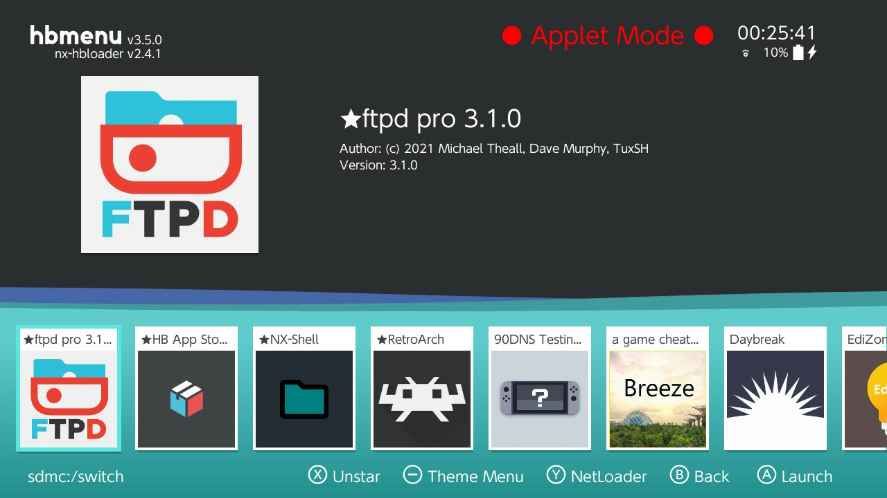
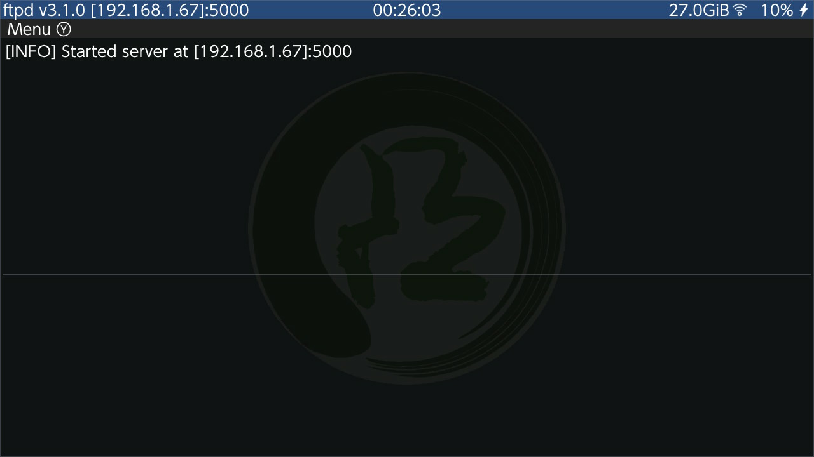

If you need to transfer single files that are not too large, it may be more convenient to transfer files over the network. You can use a Homebrew called ftpd from mtheall and TuxSH.
Make sure you are connected to Wi-Fi
Go to the Homebrew loader (Album app), and pick ftpd pro:
You may see two versions of the application, ftpd pro, and ftpd classic. Both will work fine, but the pro version has a better UI.

Launch it and take note of the IP address and port it lists at the top:

In this case, the IP is 192.168.1.67 and the port is 5000.
Use your favorite FTP client (FileZilla, Cyberduck, etc.) to connect to the FTP server.
By default, the server allows anonymous connections, meaning that you do not have to specify a user and password combination. You can change this behaviour using the menu accessed via the y button (), while in ftpd pro.
Transfer the files you need
You should see a lot of activity on the Switch when transferring. This is normal.
Exit the FTP server from the Switch
This can either be done by navigating away (Press Home (), etc.) or by pressing the Plus or Minus key ( / ).
Server Lifetime
Note that the server will only stay up as long as you have this applet open. Pressing Home () or navigating away by any means will kill the server.